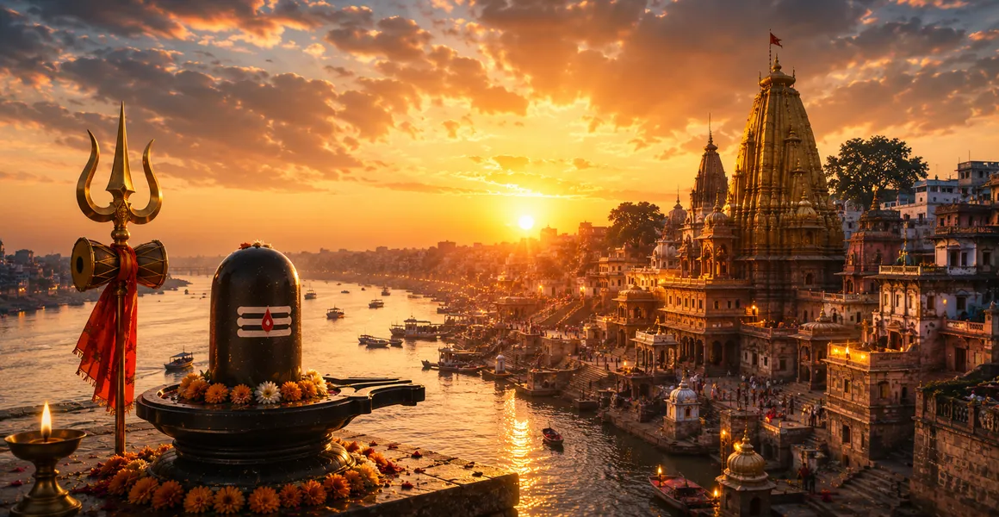

काशी विश्वनाथ की महिमा
कोटिरुद्र संहिता का पंद्रहवाँ अध्याय काशी (वाराणसी) की सर्वोच्च आध्यात्मिक महिमा और भगवान काशी विश्वनाथ की उत्कृष्ट महिमा की पड़ताल करता है।
यह दर्शाता है कि क्यों काशी ब्रह्मांडीय विघटन से अछूती रहती है और मुक्ति (मोक्ष) चाहने वाली आत्माओं के लिए परम अभयारण्य के रूप में कार्य करती है।
यह अध्याय इस पवित्र शहर में कदम रखने वाले प्रत्येक भक्त पर भगवान विश्वनाथ द्वारा प्रदान की गई गहन कृपा को प्रकट करता है।
अध्याय 15 की मुख्य बातें
काशी का परम धाम
काशी शिव के त्रिशूल पर टिकी हुई है, जो ब्रह्मांडीय विनाश से सदैव अछूती रहती है।
भगवान विश्वनाथ का नियम
भगवान शिव ब्रह्मांड के सर्वप्रभु भगवान के रूप में काशी पर शाश्वत रूप से शासन करते हैं।
मुक्ति का शहर
काशी में मरने से आत्मा सीधे पुनर्जन्म के अंतहीन चक्र से मुक्त हो जाती है।
तारक मंत्र
भगवान विश्वनाथ दिवंगत आत्मा के कान में मुक्ति मंत्र फुसफुसाते हैं।
बेजोड़ गुण
काशी का स्मरण करने मात्र से मन सभी संचित पापों से शुद्ध हो जाता है।
आध्यात्मिक रोशनी
विश्वनाथ की भक्ति आध्यात्मिक अज्ञानता को दूर करती है और परम शांति प्रदान करती है।
इस अध्याय में मुख्य विषय
- 01शिव के त्रिशूल पर शाश्वत शहर के रूप में काशी→
- 02ब्रह्मांडीय विघटन (प्रलय) से प्रतिरक्षा→
- 03भगवान विश्वनाथ की उत्कृष्ट महिमा→
- 04मुक्ति के सर्वोच्च क्षेत्र के रूप में काशी→
- 05मृत्यु के समय तारक मन्त्र की प्राप्ति→
- 06गंगा और नदियों की पवित्र उपस्थिति→
- 07तीर्थयात्रा और पूजा का अपार पुण्य→
- 08आंतरिक आध्यात्मिक रोशनी की सीट के रूप में काशी→
- 09निवासियों एवं तीर्थयात्रियों पर भगवान शिव की विशेष कृपा→
- 10परम शांति और आनंद की प्राप्ति→
- 11अध्याय 16 की ओर →
शिव के त्रिशूल पर शाश्वत शहर के रूप में काशी
अध्याय 15 यह स्थापित करते हुए शुरू होता है कि काशी केवल एक सांसारिक शहर नहीं है, बल्कि भगवान शिव के त्रिशूल की नोक पर शाश्वत रूप से स्थित एक पारलौकिक क्षेत्र है।
यह भौतिक भूगोल से परे है, ब्रह्मांड की आध्यात्मिक राजधानी के रूप में कार्य करता है जहां दिव्य चेतना अपने शुद्धतम रूप में चमकती है।
ब्रह्मांडीय विघटन (प्रलय) से प्रतिरक्षा
जबकि शेष भौतिक सृष्टि ब्रह्मांडीय चक्र के अंत में विलीन हो जाती है, काशी पूरी तरह से अछूती और सुरक्षित रहती है।
भगवान शिव शहर को अपने त्रिशूल पर सुरक्षित रखते हैं, और इसे समय की भारी तबाही से बचाते हैं।
भगवान विश्वनाथ की उत्कृष्ट महिमा
इस पवित्र शहर के केंद्र में भगवान विश्वनाथ विराजमान हैं, जो सभी लोकों के शासक हैं, जो साधकों को कृपा और आध्यात्मिक संपदा प्रदान करते हैं।
उनका ज्योतिर्लिंग अनंत प्रकाश फैलाता है, जिससे भक्तों के हृदय से अज्ञान और अहंकार का अंधकार दूर हो जाता है।
मुक्ति के सर्वोच्च क्षेत्र के रूप में काशी
काशी को अविमुक्त क्षेत्र के रूप में मनाया जाता है - वह क्षेत्र जिसे शिव ने कभी नहीं छोड़ा - जहां जीवन से प्रस्थान करने वाले किसी भी व्यक्ति को प्रत्यक्ष मुक्ति मिलती है।
यह जन्म और मृत्यु के चक्र को तोड़ता है, सांसारिक मोह-माया से बोझिल आत्माओं को परम शांति प्रदान करता है।
मृत्यु के समय तारक मन्त्र की प्राप्ति
शास्त्र से पता चलता है कि भगवान विश्वनाथ व्यक्तिगत रूप से काशी में मरने वाले प्रत्येक जीवित प्राणी के पास जाते हैं और उनके दाहिने कान में मुक्तिदायक तारक मंत्र फुसफुसाते हैं।
यह दिव्य संचरण सभी कर्म बंधनों को काटता है और आत्मा को सर्वोच्च आध्यात्मिक ऊंचाइयों तक ले जाता है।
गंगा और नदियों की पवित्र उपस्थिति
पवित्र शहर के साथ-साथ बहती हुई, माँ गंगा तीर्थयात्रियों के पापों को धोती है, जिससे काशी की शुद्ध करने की शक्ति कई गुना बढ़ जाती है।
काशी के पानी की हर बूंद और मिट्टी का कण-कण दिव्य परिवर्तनकारी शक्ति से युक्त है।
तीर्थयात्रा और पूजा का अपार पुण्य
काशी की यात्रा और भगवान विश्वनाथ की पूजा करने से सामान्य स्थानों पर की गई अनगिनत तपस्याओं से भी अधिक आध्यात्मिक पुण्य प्राप्त होता है।
इस मंदिर में सच्ची भक्ति में बिताया गया एक क्षण भी जीवन भर के नकारात्मक कर्मों को शुद्ध कर देता है।
आंतरिक आध्यात्मिक रोशनी की सीट के रूप में काशी
भौतिक भूगोल से परे, काशी चेतना की आंतरिक जागृति का प्रतिनिधित्व करती है जहां आत्मा की रोशनी शिव के साथ अपनी एकता का एहसास कराती है।
यह शहर आत्म-बोध और दिव्य ज्ञान का एक शाश्वत रूपक है।
निवासियों एवं तीर्थयात्रियों पर भगवान शिव की विशेष कृपा
भगवान शिव काशी के निवासियों, आगंतुकों और सच्चे भक्तों को अपनी प्रत्यक्ष व्यक्तिगत सुरक्षा और दयालु देखभाल के अधीन रखते हैं।
काशी में शरण लेने वाला कोई भी भक्त कभी आध्यात्मिक पतन या निराशा में नहीं पड़ता।
परम शांति और आनंद की प्राप्ति
काशी विश्वनाथ पर ध्यान के माध्यम से, साधकों को आंतरिक शांति, शांति और दिव्य आनंद की स्थायी अनुभूति होती है।
परम चेतना के प्रचंड प्रकाश में सारी सांसारिक चिंताएँ विलीन हो जाती हैं।
अध्याय 16 की ओर
काशी विश्वनाथ के पारलौकिक क्षेत्र का महिमामंडन करने के बाद, कथा अगले पवित्र मंदिर में परिवर्तन की तैयारी करती है।
पाठकों को अध्याय 16 में मल्लिकार्जुन की दिव्य कहानी की खोज के लिए आगे निर्देशित किया जाता है।
अध्याय 15 की मुख्य शिक्षाएँ
शाश्वत पवित्रता
काशी सदैव गौरवशाली और सार्वभौमिक विनाश से अछूती बनी हुई है।
सर्वोच्च संप्रभुता
भगवान विश्वनाथ सभी आध्यात्मिक अनुभूतियों के हृदय के रूप में सर्वोच्च हैं।
मुक्ति की गारंटी
काशी में कृपा पुनर्जन्म के चक्र से मुक्ति दिलाती है।
तारक अनुग्रह
जीवन के अंत में भगवान स्वयं मुक्ति मंत्र प्रदान करते हैं।
शुद्ध करने वाली शक्ति
काशी का स्मरण करने से सारे संचित पाप तत्काल भस्म हो जाते हैं।
आध्यात्मिक जागृति
काशी की तीर्थयात्रा से भीतर परम दिव्य प्रकाश जागृत होता है।
आध्यात्मिक चिंतन
काशी विश्वनाथ की महिमा मानव आत्मा के लिए एक शाश्वत अभयारण्य है। सांसारिक साम्राज्यों के ढहने के लंबे समय बाद भी, काशी शांति और मुक्ति बिखेरते हुए, शिव के त्रिशूल पर सुरक्षित बनी हुई है। यह हमें याद दिलाता है कि चाहे हमारा सांसारिक अस्तित्व कितना भी उलझा हुआ क्यों न हो, विश्वनाथ की कृपा और काशी की पवित्रता परम स्वतंत्रता और आंतरिक जागृति के लिए एक खुला द्वार प्रदान करती है।
अध्याय 15 का संदेश जीना
दैनिक विकर्षणों के बीच आध्यात्मिक स्पष्टता बनाए रखने के लिए काशी विश्वनाथ की आंतरिक स्मृति विकसित करें।
जीवन को मुक्तिदायक जागरूकता के साथ देखें कि सच्ची स्वतंत्रता ईश्वर के प्रति आध्यात्मिक समर्पण से उत्पन्न होती है।
हर पल को उच्च आध्यात्मिक विकास के अवसर के रूप में देखते हुए, प्रतिदिन अपने विचारों और कार्यों को शुद्ध करें।
प्रमुख आध्यात्मिक अवधारणाएँ
शिव के त्रिशूल पर टिका शाश्वत शहर, विघटन से अछूता।
भगवान शिव ब्रह्मांड के संप्रभु शासक और रक्षक हैं।
मुक्ति प्रदान करने वाला यह पवित्र क्षेत्र भगवान शिव द्वारा कभी नहीं छोड़ा गया।
काशी में प्रस्थान करने वाली आत्माओं को शिव द्वारा फुसफुसाया गया मुक्तिदायक ज्ञान।
पारलौकिक सत्य कि आत्मा भौतिक विनाश से परे है।
जन्म और मृत्यु के कष्टदायक चक्र से परम मुक्ति।
अध्याय सारांश
कोटिरुद्र संहिता अध्याय 15 काशी और भगवान विश्वनाथ की सर्वोच्च आध्यात्मिक महिमा का जश्न मनाता है। शिव के त्रिशूल पर सुरक्षित रूप से टिकी हुई, काशी ब्रह्मांडीय विघटन से प्रतिरक्षित रहती है, मुक्ति के अंतिम क्षेत्र के रूप में कार्य करती है जहां आत्माओं को जीवन के अंत में तारक मंत्र प्राप्त होता है। यह अध्याय काशी को दैवीय कृपा के शाश्वत प्रतीक के रूप में स्थापित करता है, जो अध्याय 16 में मल्लिकार्जुन की कहानी को सुचारू रूप से आगे बढ़ाता है।
अक्सर पूछे जाने वाले प्रश्न
1. कोटिरुद्र संहिता अध्याय 15 का मुख्य विषय क्या है?
अध्याय 15 में काशी (वाराणसी) की सर्वोच्च आध्यात्मिक महिमा और भगवान काशी विश्वनाथ ज्योतिर्लिंग की दिव्य महिमा का विवरण दिया गया है।
2. काशी को अन्य पवित्र नगरों से श्रेष्ठ क्यों माना जाता है?
ब्रह्मांडीय विघटन के दौरान काशी कभी विनाश से नहीं गुजरती क्योंकि यह भगवान शिव के त्रिशूल पर टिकी हुई है, जो मुक्ति (मोक्ष) के अंतिम केंद्र के रूप में कार्य करती है।
3. काशी विश्वनाथ कौन हैं?
काशी विश्वनाथ भगवान शिव हैं, जो ब्रह्मांड के भगवान के रूप में पवित्र शहर काशी में शाश्वत रूप से निवास करते हैं।
4. मृत्यु के समय भगवान विश्वनाथ क्या आशीर्वाद देते हैं?
काशी में प्रस्थान करने वाले प्रत्येक प्राणी के दाहिने कान में भगवान विश्वनाथ व्यक्तिगत रूप से तारक मंत्र (मुक्ति का मंत्र) प्रदान करते हैं।
5. अध्याय 15 आसपास के अध्यायों से कैसे जुड़ता है?
अध्याय 15 अध्याय 14 (भीमाशंकर की दिव्य शक्ति) के बाद आता है और अध्याय 16 (मल्लिकार्जुन की पवित्र कहानी) से पहले आता है।
6. इस अध्याय का मुख्य आध्यात्मिक निष्कर्ष क्या है?
काशी विश्वनाथ का स्मरण और पूजा सांसारिक अस्तित्व के बंधनों को काटती है, परम शांति और शाश्वत मुक्ति प्रदान करती है।
"शिव के त्रिशूल पर अनंत काल तक टिकी हुई काशी मुक्ति और दैवीय कृपा के सर्वोच्च प्रतीक के रूप में चमकती है।"
कोटिरुद्र संहिता के माध्यम से जारी रखें
अध्याय 15 काशी विश्वनाथ की महिमा का वर्णन करता है। अध्याय 16, मल्लिकार्जुन की पवित्र कहानी को जारी रखें।